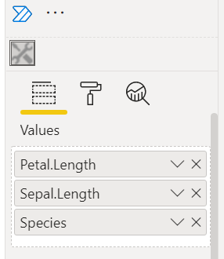
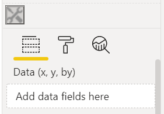
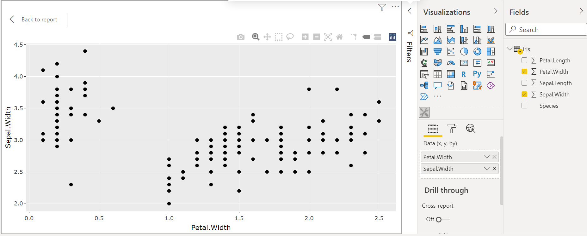
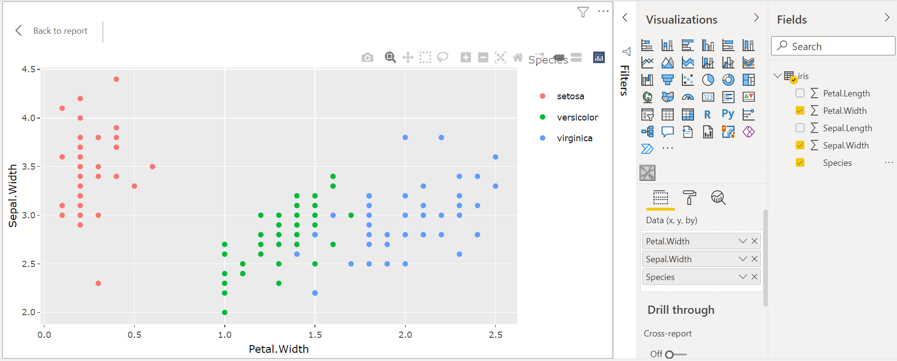
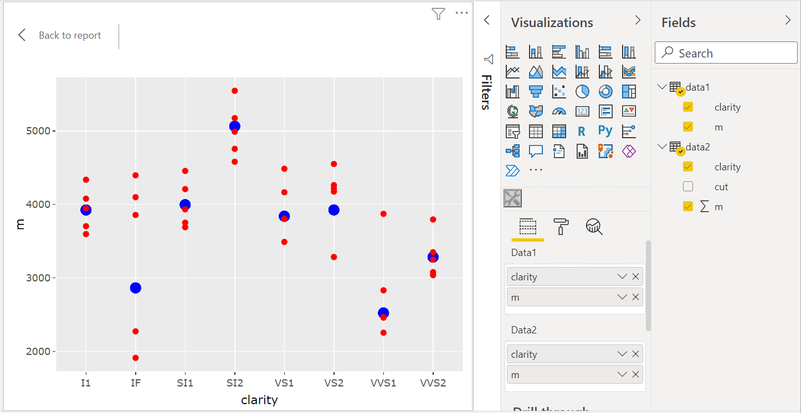
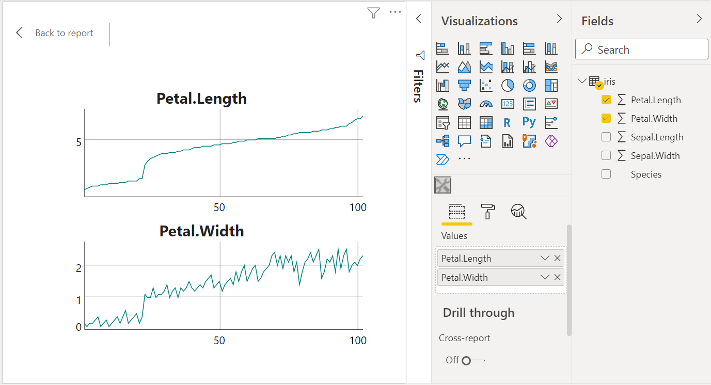

HTML widgets in Power BI
It is possible to include a htmlwidget in a
Power BI report, such as a
plotly graphic.
Setting up an environment
You first have to follow the first three steps of this tutorial:
-
install Node.js;
-
install pbiviz;
create and install a certificate;
-
install the npm package
powerbi-visuals-api.
Node.js is available in the GSK software center. You can alternatively download a portable version on the nodejs.org website: choose the 64-bit zip, unzip it in a folder and set this folder in your Windows path.
Follow the tutorial for steps 2 and 3. Note that you have to perform step 3 only once, there’s no need to generate a new certificate for each visual you will create.
For step 4, run npm install -g powerbi-visuals-api in
a terminal.
Example
Let’s assume you want to render the interactive graphic produced by this code:
library(plotly)
gg <- ggplot(iris, aes(x = Petal.Length, y = Sepal.Length, color = Species)) +
geom_point()
ggplotly(gg) -
create a working directory:
mkdir pbiwidgetsand go into it:cd pbiwidgets; -
initialize a new visual by running:
pbiviz new iris -t rhtml; -
this creates the folder pbiwidgets/iris with a lot of stuff;
-
in this folder, edit the file pbiviz.json; you have to write something for
description(what you want),supportUrl(write anything you want, e.g.https://www.example.com), and you have to write something for the fieldsnameandemail; -
now you have to edit the file script.r:
source('./r_files/flatten_HTML.r')
############### Library Declarations ###############
libraryRequireInstall("plotly")
####################################################
################### Actual code ####################
gg <- ggplot(iris, aes(x=Petal.Length, y=Sepal.Length, color = Species)) +
geom_point()
p <- ggplotly(gg)
####################################################
################## Save widget #####################
internalSaveWidget(p, "out.html")
####################################################
################ Reduce paddings ###################
ReadFullFileReplaceString(
"out.html", "out.html", ',"padding":[0-9]*,', ',"padding":0,'
)
####################################################-
the dataframe
Valuesis the dataset which will be sent to this R script by Power BI; -
since we want to use
irisas data, we save it to an Excel file that we will import in Power BI; I recommend to use writexl (the Excel files written with openxlsx cause an issue when one tries to load them in Power BI):
writexl::write_xlsx(iris, "iris.xlsx")
# or writexl::write_xlsx(list("sheetName" = iris), "iris.xlsx") -
go to the folder pbiwidgets/iris in your terminal and run the command
pbiviz package; -
now open Power BI, import iris.xlsx, select and load the sheet;
-
in the ‘Visualizations’ panel, click the three dots, then ‘import a visual from a file’, and select the pbiviz file which is located in pbiwidgets/iris/dist
-
a new icon showing some tools appears at the bottom in the ‘Visualizations’ panel, click it;
-
in the ‘Fields’ panel, select the columns used for the plot, here
Petal.Length,Sepal.LengthandSpecies; -
that’s it, you get the interactive graphic in Power BI.
{kind=link}
Helper function
If you have to deal with multiple widgets, you will be bothered about the filling of the pbiviz.json file. Here is a R function which fills it for you:
library(jsonlite)
fill_pbiviz <- function(path){
wd <- setwd(path)
on.exit(setwd(wd))
pbiviz <- fromJSON("pbiviz.json")
pbiviz[["visual"]][["description"]] <- "Description"
pbiviz[["visual"]][["supportUrl"]] <- "https://wwww.example.com"
pbiviz[["author"]][["name"]] <- "John Doe"
pbiviz[["author"]][["email"]] <- "john.doe@gmail.com"
pbiviz <- toJSON(pbiviz, auto_unbox = TRUE, null = "null", pretty = 2)
writeLines(pbiviz, "pbiviz.json")
}Just run fill_pbiviz("path/to/pbiwidgets/iris").
Notes
This works very well with plotly and
ggplotly widgets. I also tested a graphic with the
scatterD3 package and the result was fine as well.
But this can be less fine for other htmlwidgets.
For example, with the ggiraph package, I managed to
achieve a good result after settings the options
width_svg = 3, height_svg = 2.5 in the
girafe function. I also set the option
opts_zoom(min = .7, max = 2) in the
girafe_options function:
gg_point <- ggplot(data = data) +
geom_point_interactive(......
p <- girafe(ggobj = gg_point, width_svg = 3, height_svg = 2.5)
p <- girafe_options(p, opts_zoom(min = .7, max = 2))
internalSaveWidget(p, "out.html")
I tried a pie chart with the rAmCharts4 package and
got an empty plot. I finally managed to get the pie chart by
removing the last lines of the file
script.r:
################ Reduce paddings ###################
ReadFullFileReplaceString(
"out.html", "out.html", ',"padding":[0-9]*,', ',"padding":0,'
)
And I set the height option of the
amPieChart function to 300px, otherwise
the legend was truncated.
Advanced example
When you select the columns Petal.Length,
Sepal.Length and Species, they appear in
the ‘Visualizations’ panel, under the dataset name
Values:

Then, Power BI sends the data to the R script with the help of a CSV file, and the columns of this CSV file are in the same order as your selected columns.
Therefore, instead of using the column names in the R script, one can use the column indices.
Let’s illustrate. We will create a scatter plot as in the previous example, but the user will have the choice of the variables on the x-axis and the y-axis, and he’ll can also choose or not a color factor.
Firstly, we change the display name of the
Values dataset. Open the file
pbiwidgets/iris/capabiities.json (with any text
editor), and change the display name in the
dataRoles field:
{
"dataRoles" : [
{
"displayName" : "Data (x, y, by)",
"kind" : "GroupingOrMeasure",
"name" : "Values"
}
],
......Now we will see Data (x, y, by) in the ‘Visualizations’ panel, instead of Values:

Then we use the following R code in script.r:
################### Actual code ####################
nms <- colnames(Values)
ncols <- length(nms)
if(ncols == 2L){
gg <- ggplot(
Values, aes(x=.data[[nms[1]]], y=.data[[nms[2]]])
) +
geom_point()
}else if(ncols >= 3L){
gg <- ggplot(
Values, aes(x=.data[[nms[1]]], y=.data[[nms[2]]], color = .data[[nms[3]]])
) +
geom_point()
}else{
gg <- ggplot() + geom_blank()
}
p <- ggplotly(gg)
####################################################
Now we can choose the columns we want for the x-axis and for the
y-axis, and we can optionally choose the
Species color factor:


Arbitrary HTML
In fact, pbiviz is not restricted to render a
htmlwidget. One can render any HTML file, it suffices
to save it under the name out.html in
the R script. For instance, in the above example, we render a
blank plot if the user does not select at least two columns. We
can throw a message instead, with a R script like this:
source("./r_files/flatten_HTML.r")
############### Library Declarations ###############
libraryRequireInstall("plotly")
####################################################
htmlMessage <- function(message){
html <- c(
"<!doctype html>",
"<html lang=en>",
" <head>",
" <meta charset=utf-8>",
" </head>",
" <body>",
sprintf(" <p>%s</p>", message),
" </body>",
"</html>"
)
writeLines(html, "out.html")
}
################### Actual code ####################
nms <- colnames(Values)
ncols <- length(nms)
if(ncols == 2L){
gg <- ggplot(
Values, aes(x=.data[[nms[1]]], y=.data[[nms[2]]])
) +
geom_point()
p <- ggplotly(gg)
internalSaveWidget(p, "out.html")
}else if(ncols >= 3L){
gg <- ggplot(
Values, aes(x=.data[[nms[1]]], y=.data[[nms[2]]], color = .data[[nms[3]]])
) +
geom_point()
p <- ggplotly(gg)
internalSaveWidget(p, "out.html")
}else{
htmlMessage(
"You have to select at least two columns."
)
}
################## End of script ###################Using multiple datasets
Some graphics require more than one dataset. We give an example here.
First, we prepare two datasets:
library(dplyr)
data("diamonds", package = "ggplot2")
## creating dataset #1
data1 <-
diamonds %>%
group_by(clarity) %>%
summarize(m = mean(price))
## creating dataset #2
data2 <-
diamonds %>%
group_by(clarity, cut) %>%
summarize(m = mean(price))
## save to Excel files
writexl::write_xlsx(list("data1" = data1), "diamonds_summarized1.xlsx")
writexl::write_xlsx(list("data2" = data2), "diamonds_summarized2.xlsx")
Create the visual project:
pbiviz new diamonds -t rhtml. Complete the file
pbiwidgets/diamonds/pbiviz.json as
previously explained, and modify the file
pbiwidgets/diamonds/capabilities.json as
follows:
{
"dataRoles": [
{
"displayName": "Data1",
"kind": "GroupingOrMeasure",
"name": "data1"
},
{
"displayName": "Data2",
"kind": "GroupingOrMeasure",
"name": "data2"
}
],
"dataViewMappings": [
{
"scriptResult": {
"dataInput": {
"table": {
"rows": {
"select": [
{
"for": {
"in": "data1"
}
},
{
"for": {
"in": "data2"
}
}
],
......Now the R script, in pbiwidgets/diamonds/script.r:
source('./r_files/flatten_HTML.r')
############### Library Declarations ###############
libraryRequireInstall("plotly")
####################################################
################### Actual code ####################
gg <- ggplot() +
geom_point(data = data1, aes(x = clarity, y = m), color = "blue", size = 3) +
geom_point(data = data2, aes(x = clarity, y = m), color = "red")
####################################################
############# Create and save widget ###############
p <- ggplotly(gg)
internalSaveWidget(p, 'out.html')
####################################################
Now you can compile the project: run
pbiviz package from the folder
pbiwidgets/diamonds.
Open Power BI and load the two Excel files. Select ‘Get more visuals’ as before (the icon with the three dots), ‘Import a visual from a file’ and select the pbiviz file located in the pbiwidgets/diamonds/dist folder.
Drag and drop the column names of the two datasets to put them in Data1 and Data2. Here is the result:

Helper function
Here is a R function which generates the capabilities.json file:
library(jsonlite)
fill_capabilities <- function(path, dataNames, dataDisplayNames){
wd <- setwd(path)
on.exit(setwd(wd))
caps <- fromJSON("capabilities.json", simplifyVector = FALSE)
caps[["dataRoles"]] <- mapply(function(name, displayName){
list(
"displayName" = displayName,
"kind" = "GroupingOrMeasure",
"name" = name
)
}, dataNames, dataDisplayNames, SIMPLIFY = FALSE, USE.NAMES = FALSE)
caps[["dataViewMappings"]][[
1L
]][["scriptResult"]][["dataInput"]][["table"]][["rows"]][["select"]] <-
lapply(dataNames, function(dataName){
list("for" = list("in" = dataName))
})
caps <- toJSON(caps, auto_unbox = TRUE, null = "null", pretty = 2)
writeLines(caps, "capabilities.json")
}Usage example:
fill_capabilities(
"path/to/pbiwidgets/diamonds", c("data1", "data2"), c("Data1", "Data2")
)Limiting the number of selected columns
We can limit the number of columns that the user can select in a
table. For instance, let’s take the previous example. The maximum
number of columns is set in the file
capabilities.json, in the dataViewMappings field:
{
"dataRoles": [
{
"displayName": "Data1",
"kind": "GroupingOrMeasure",
"name": "data1"
},
{
"displayName": "Data2",
"kind": "GroupingOrMeasure",
"name": "data2"
}
],
"dataViewMappings": [
{
"conditions": [
{
"data1": {
"max": 2
},
"data2": {
"max": 2
}
}
],
"scriptResult": {
......Combining widgets
The
manipulateWidget package
provides a useful function combineWidgets which, as
its name indicates, allows to combine several widgets.
Here is an example using the widgets of the dygraphs package.
source('./r_files/flatten_HTML.r')
############### Library Declarations ###############
libraryRequireInstall("dygraphs")
libraryRequireInstall("manipulateWidget")
####################################################
################### Actual code ####################
y1 <- Values[[1]]
y2 <- Values[[2]]
x <- 1L:nrow(Values)
columnNames <- colnames(Values)
df1 <- data.frame(x = x, y = y1)
df2 <- data.frame(x = x, y = y2)
widget1 <- dygraph(df1, main = columnNames[1L])
widget2 <- dygraph(df2, main = columnNames[2L])
####################################################
############# Create and save widget ###############
widget <- combineWidgets(widget1, widget2)
internalSaveWidget(widget, 'out.html')
####################################################
Prevent removal of duplicated rows
Power BI has an undesirable behavior: when sending the data to R, it removes the duplicated rows. To alleviate this problem, you have to add a column without duplicated values. An easy way to get such a column consists in going to the Power Query Editor (“Transform data” button), then going to the tab “Add column” and select “Index Column”. Then include this column in the data exported to R.
Adding formatting objects
Here we explain how to achieve the result shown on the image below. With this visual, the user is able to add a title to the chart and to select a theme for the chart.

This is achieved by modifying two files: the file capabilities.json and the file src/settings.ts in the folder created by pbiviz.
Here is the file capabilities.json. We modified the objects node:
{
"dataRoles": [
{
"displayName": "Data (x, y, color, index)",
"kind": "GroupingOrMeasure",
"name": "dat"
}
],
"objects": {
"ggsettings": {
"displayName": "Chart Settings",
"description": "Chart theme and title",
"properties": {
"ChartTitle": {
"displayName": "Chart Title",
"description": "Set chart title",
"type": {
"text": true
}
},
"ChartTheme": {
"displayName": "Chart Theme",
"description": "Select the Chart Theme",
"type": {
"enumeration": [
{
"displayName": "Classic",
"value": "classic"
},
{
"displayName": "Economist",
"value": "economist"
},
{
"displayName": "Excel",
"value": "excel"
}
]
}
}
}
}
},
"dataViewMappings": [
{
......And here is the TypeScript file src/settings.ts:
"use strict";
import { dataViewObjectsParser } from "powerbi-visuals-utils-dataviewutils";
import DataViewObjectsParser = dataViewObjectsParser.DataViewObjectsParser;
export class VisualSettings extends DataViewObjectsParser {
public ggsettings: ChartSettings = new ChartSettings();
}
export class ChartSettings {
public ChartTitle: string = "";
public ChartTheme: string = "classic";
}
Then, in the file script.r the title set
by the user and the theme he chooses are named
ggsettings_ChartTitle and
ggsettings_ChartTheme respectively. But they won’t be
available at the first creation of the chart, so we have to check
for their existence in the R script:
if(exists("ggsettings_ChartTheme") && exists("ggsettings_ChartTitle")){
......Here is the full script I used:
source('./r_files/flatten_HTML.r')
############### Library Declarations ###############
libraryRequireInstall("plotly")
library(ggthemes)
####################################################
################### Actual code ####################
nms <- colnames(dat)
ncols <- length(nms)
if(ncols == 4){
gg <- ggplot(
dat, aes_string(x = nms[1], y = nms[2], color = nms[3])
) +
geom_point()
}else{
stop("You have to select four columns!")
}
if(exists("ggsettings_ChartTheme") && exists("ggsettings_ChartTitle")){
gg <- gg + ggtitle(ggsettings_ChartTitle)
if(ggsettings_ChartTheme == "economist"){
gg <- gg + scale_color_economist() + theme_economist()
}else if(ggsettings_ChartTheme == "excel"){
gg <- gg + scale_color_excel_new() + theme_excel_new()
}
}
####################################################
############# Create and save widget ###############
p <- ggplotly(gg)
internalSaveWidget(p, 'out.html')
####################################################List of available object types
- color picker:
"type": {
"fill": {
"solid": {
"color": true
}
}
}- text input:
"type": {
"text": true
}- number input:
"type": {
"numeric": true
}- integer input:
"type": {
"integer": true
}- switch input (true/false):
"type": {
"bool": true
}- percentage input:
"type": {
"formatting": {
"fontSize": true
}
}- dropdown list:
"type": {
"enumeration": [
{
"displayName": "Item 1",
"value": "item1"
},
{
"displayName": "Item 2",
"value": "item2"
}
]
}Restricting a number input to a range
It might be desirable to have a minimum value and a maximum value
for a number input. Assume you have such an
objects field in
capabilities.json:
"objects": {
"regressionline": {
"displayName": "Regression Line",
"description": "Add regression line",
"properties": {
"AddLine": {
"displayName": "Add",
"description": "Add regression line",
"type": {
"bool": true
}
},
"LineWidth"; {
"displayName": "Line Width",
"description": "Width of regression line",
"type": {
"numeric": true
}
}
}
},
......
}You want to restrict the choice of the line width, say for example it must lie between 2 and 8. Then you have to modify the file src/visual.ts. Firstly, you have to add this import:
import VisualObjectInstanceEnumeration = powerbi.VisualObjectInstanceEnumeration;
(add it in the block of imports at the beginning of the file).
Secondly, you have to replace the function
enumerateObjectInstances defined at the end with:
public enumerateObjectInstances(
options: EnumerateVisualObjectInstancesOptions
): VisualObjectInstanceEnumeration {
var enumeratedObjects: VisualObjectInstanceEnumerationObject = <
VisualObjectInstanceEnumerationObject
>VisualSettings.enumerateObjectInstances(
this.settings || VisualSettings.getDefault(), options
);
if (options.objectName === "regressionline") {
enumeratedObjects.instances[0].validValues = {
LineWidth: { numberRange: { min: 2, max: 8 } }
};
}
return enumeratedObjects;
}